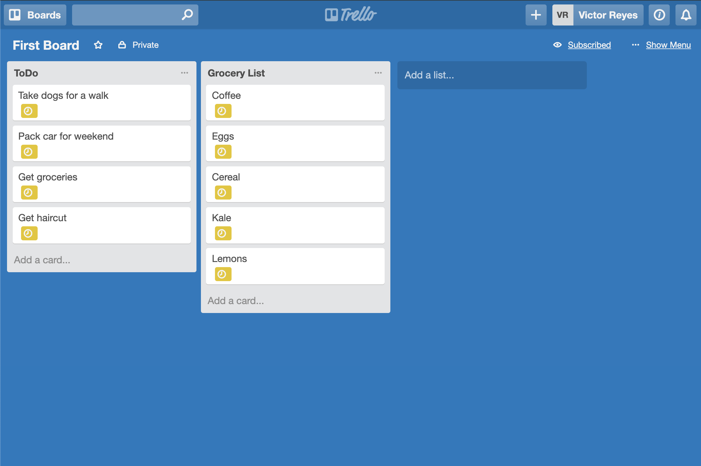
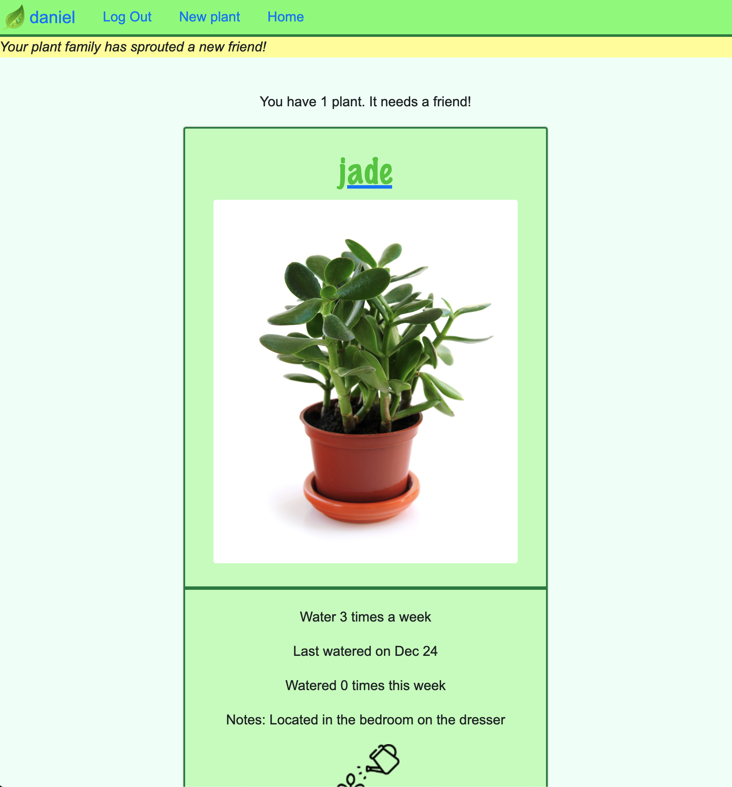
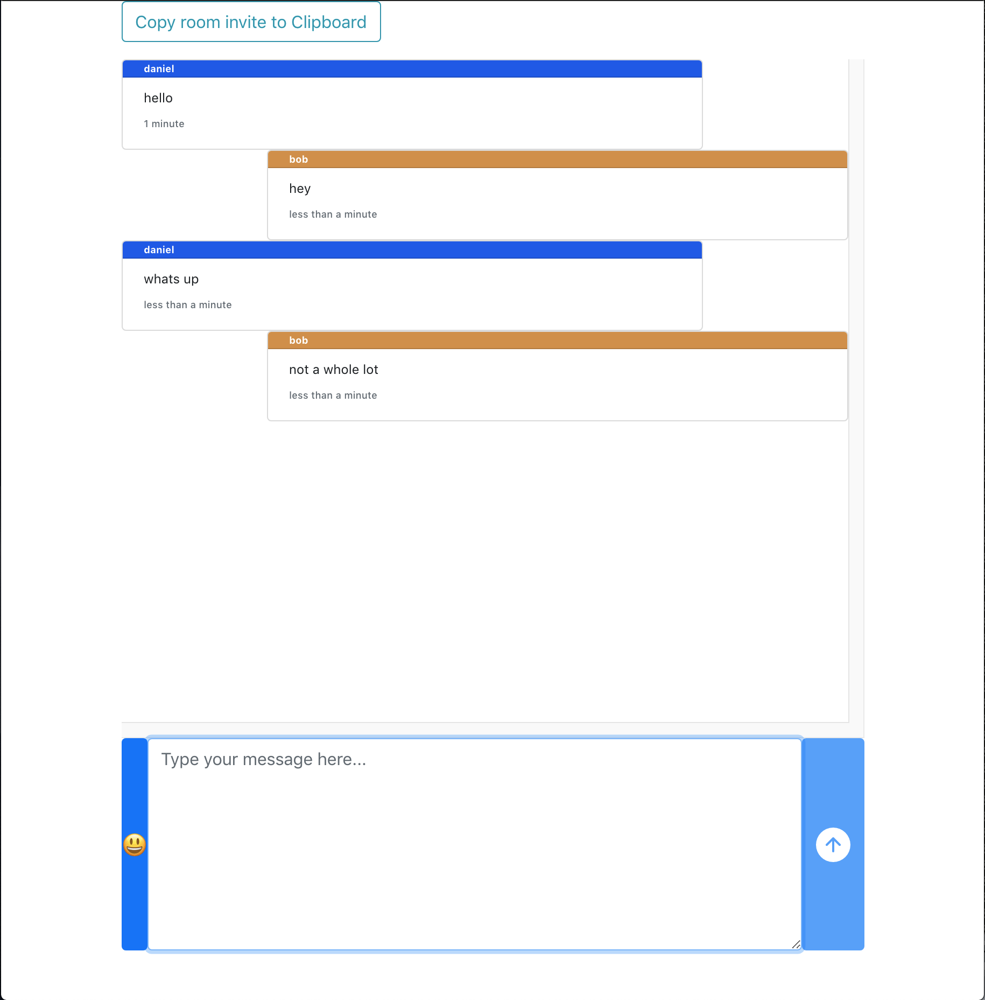
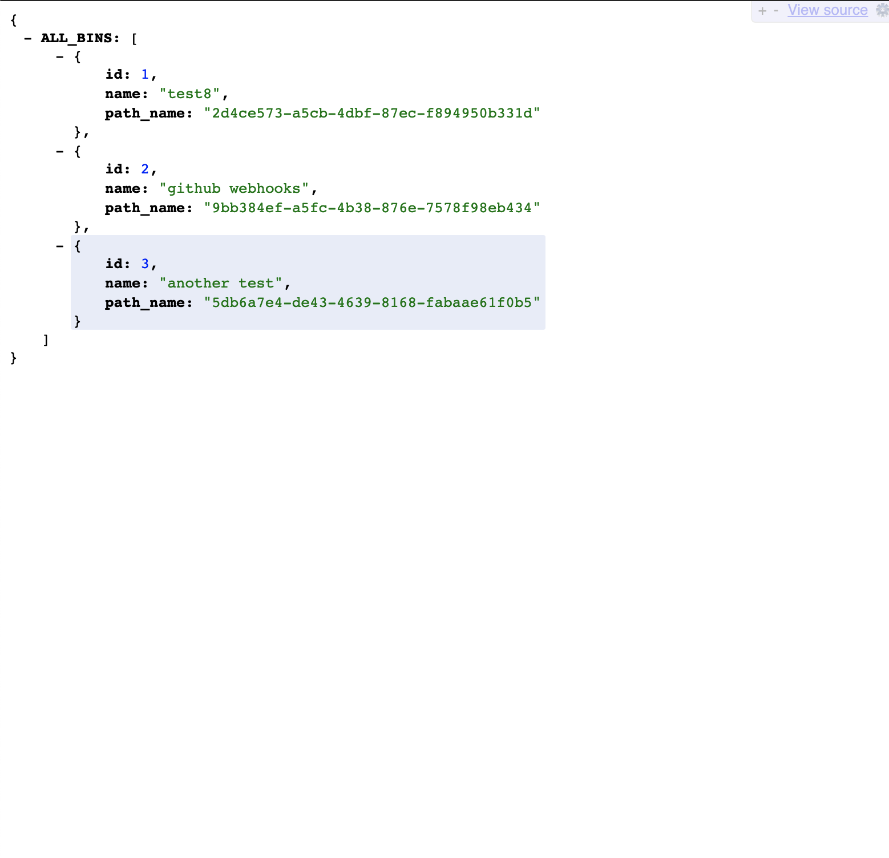

Daniel Lew
I'm a full-stack Software Engineer based in Toronto, Canada, with experience in Ruby, JavaScript, Node.js, PostgreSQL, AWS, Rails, and React.
Most recently, I built Stagehand, a drop-in service for automatically deploying and managing review apps for frontend applications.
Stagehand is a drop-in service for automatically deploying and managing review apps for frontend applications.
Stagehand is a framework that automatically manages review apps for your application’s GitHub repository on your own cloud infrastructure. We use AWS, GitHub Actions, and some Stagehand client-side code to set-up, deploy, manage, and teardown review apps for your frontend application.
READ THE STAGEHAND CASE STUDY WATCH A TALK I RECENTLY GAVE ABOUT STAGEHANDOther projects
-

Mello
Trello-like collaboration board with back-end API built with Rails, and front-end UI built with React + Redux.
-

Water Scheduler
Keep track of all your plants watering schedules, get alerted when a plant needs to be watered. Also check out your friends plants! Built with Sinatra, hosted on Heroku.
-

World Chat
Multi-room chat app using a websocket server built with Node.js. Frontend built with React. Hosted on a Digital Ocean VPS with an nginx proxy to handle websockets.
-

Request Bucket
A request bin-like app hosted on a Digital Ocean VPS. Create an endpoint to capture an event (ie, API or Webhook requests). You're able to view the event objects in full. Built with a Node.js express server using MongoDB to capture event info and using PostgresSQL to store bin information and relational event data.
-

Project Manager
Rails API to manage projects, users, and auth. Used for the first iteration of CoLab. Test suite built with RSpec.